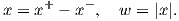

Solution: Assume x ∈ La. It follows that
It follows similarly that if x ∈ Lb then x ∈ La. Thus La = Lb.
Solution: We prove both directions by contradiction.
- Assume ∈ F is not an extreme point of F, show it is not an extreme point of Q:
By assumption, there exist points y,z ∈ F, y≠z, and scalar λ with 0 < λ < 1 satisfying = λy+(1-λ)z. Since F ⊆ Q, we see immediately that is not an extreme point of Q.
- Assume ∈ F is not an extreme point of Q, show it is not an extreme point of F:
Since F is a face of Q, there exists a vector a ∈ ℝn and a scalar α such that (i) F = Q ∩ H with H = {x ∈ ℝn : aT x = α} and (ii) aT x ≥ α for all x ∈ Q. By assumption, there exist points y,z ∈ Q, y≠z, and scalar λ with 0 < λ < 1 satisfying = λy + (1 - λ)z. Now, aT = α, aT y ≥ α, aT z ≥ α. If aT y > α or aT z > α then aT = λaT y + (1 - λ)aT z > α, a contradiction. Thus, we must have aT y = aT z = α, so y,z ∈ F, so is not an extreme point of F.
|
| (1) |
where x,w ∈ ℝn, b ∈ ℝm, and all other vectors and matrices are dimensioned appropriately. Note that the components of x are not restricted in sign.
- Assume all entries in d and H are nonnegative. Show that (1) can be formulated as an equivalent linear program, in the sense that the LP and (1) have the same optimal value if they are feasible, and each is infeasible if the other is infeasible.
- Provide a counterexample with n = 1 where your LP and (1) are not equivalent when H contains negative entries.
Solution:
- LP formulations can be constructed in (at least) two ways: either split x into positive and negative components,
or set wi to be at least as large as both xi and -xi. Both formulations relax the constraint |xi| = wi to
|xi|≤ wi.
- Split x into positive and negative components: We introduce nonnegative variables xi+ and xi- for each i,
replace the absolute value of x by x+ + x-, and then construct the LP
(2) If (x,w) is feasible in (1) then we can construct a feasible solution to (2) with the same value by setting:

for i = 1,…,n. Hence (2) is feasible if (1) is feasible, with optimal value that is at least as good. This observation does not exploit the sign of H or d.
If (x+,x-) is feasible in (2) then we can construct a feasible solution to (1) with the same or better value by setting
 The feasibility of this solution in (1) follows from the nonnegativity of the entries in H. Similarly, dT w ≤ dT (x+ + x-) because of the nonnegativity of d.
- Impose two linear constraints on w:
(3) If (x,w) is feasible in (1) then it is feasible in (3), with the same value.
If (x,w) is feasible in (3) then we can construct a feasible solution in (1) by decreasing each component of w to |xi| (if necessary). Feasibility of this modified solution follows from the nonnegativity of H, and the objective value is no worse because of the nonnegativity of d.
- Split x into positive and negative components: We introduce nonnegative variables xi+ and xi- for each i,
replace the absolute value of x by x+ + x-, and then construct the LP
- We use the same example in both formulations, with m = 1:
The constraints imply x ≤ 0, so the optimal value is 0, achieved by x = w = 0.
- The corresponding version of (2) is
For any t ≥ 0, we can set x+ = 3t, and x- = t, which has value -2t. Thus, this LP has unbounded optimal value.
- The corresponding version of (3) is
For any t ≥ 0, we can set x = t and then any w ≥ 2t is feasible, with value -t. Thus, the LP has unbounded optimal value.
- The corresponding version of (2) is
Use complementary slackness to show that x = (6,0,0) is optimal for this problem. Find two different dual optimal solutions.
Solution: The dual is
The slack in the second primal constraint is positive at the given solution, so by complementary slackness we need y2 = 0. Two dual feasible solutions that satisfy complementary slackness are y = (3,0,0) and y = (8,0,-5) (and any convex combination of them). Since primal and dual feasibility and complementary slackness are satisfied, the given solutions are optimal, with optimal value 18.
System 1: Ax < 0, Bx = 0 for some x ∈ ℝn.
System 2: AT u + BT v = 0 for some u ∈ ℝp, v ∈ ℝq, with u ≥ 0 and u≠0.
Solution:
Consider the primal-dual pair of LPs:
where e is the vector of ones.
If (P) is feasible then System (I) is consistent, and vice versa (rescaling x if necessary).
Note that (D) is always feasible: take u = 0 and v = 0. So either (D) has optimal value 0 or it is unbounded, since any solution with nonzero objective function value can be rescaled.
If System (1) is consistent then (P) is feasible with optimal value 0. So (D) has optimal value 0 by strong duality. Thus, System (2) is inconsistent.
If System (1) is inconsistent then (P) is infeasible. So (D) must be unbounded by strong duality. Thus, System (2) is consistent.